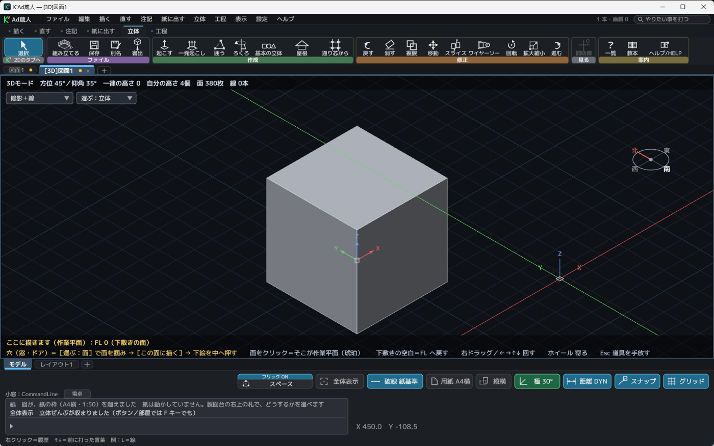

15. Solids (3D and STL)
3D view
![Press [3D] on the 3D tab and it first asks how to enter](../e/15-立体表示-0.png)
Type 3D → Enter = the drawing is given a height and shown as a solid.
- Drag with the left button, or the arrow keys = rotate.
- 1–5 = top, front, right, left, back. 0 = isometric.
- PageUp / PageDown = raise or lower the extrusion height.
- Esc = back to the drawing (which is untouched).
- The ribbon can be pressed inside the room too. Press a 2D tool such as Line or Circle and it goes straight back to the drawing and starts (no need to press "◀ Back to the drawing"). Save, Save As, 3D, Export, Command list, Manual and Help work while you stay in the room. Undo and Raise work only in a room built from a drawing (a room of an STL or of baked solids has neither an undo history nor an underlay to raise from, so pressing them goes back to the drawing).
- In the room, ⌘S (Ctrl+S on Windows) = save. ⌘⇧S = save as. ⌘Z = undo one step. After saving you stay in the room and the view direction does not move. (In a room entered from the Stack stage, the ribbon and saving are stopped = go back to the stage first.)

Ribbon [Extrude] = from a 2D drawing, extrude into 3D
In a 2D drawing, press [Extrude] on the 3D tab.
- In a drawing for the first time, you are asked "Solids are made on a 3D sheet". Answer, and you enter the 3D room with that drawing as the underlay, holding [Raise] (nothing is written to the original 2D drawing).
- Click an enclosed area (rectangle, closed polyline, circle…) → set the height with the mouse up/down or a number → click and it becomes a solid.
- The difference from [3D] = [3D] enters the room empty-handed; [Extrude] enters holding the extrude tool.
- A drawing with nothing drawn cannot be extruded (draw a shape first).
EXT / Extrude = decide the thickness per shape
Select objects and type EXT 1200 → Enter in the command box.
- Only those shapes rise, to a height of 1200.
- EXT 0 = remove the thickness (back to the room's uniform height).
- It works on lines, circles, arcs, polylines, ellipses, splines and hatches.
- It can also be retyped in the [Thickness] row of Properties (PR). Thickness does not show in plan, so the places to check it are here and the 3D room.
- Thickness is saved in the drawing (DXF). Other CADs can open it as solids too (code 39 of the standard = 2.5D).
Example: mix walls 2400, floor boards 12 and columns 3000 in one drawing and raise them together. Only shapes without a thickness move with the uniform height of PageUp / PageDown.
FLATTEN = set Z, elevation and thickness to 0
[Flatten] on the Modify tab (FLATTEN in the command box).
For drawings from other CADs when intersections cannot be picked or lines are floating.
- With a selection, only those shapes. With nothing selected it asks "Flatten the whole drawing?" after stating the count.
- Set to 0 = the Z of lines, circles, text, points and inserts / the elevation of polylines / thickness.
- Circles, arcs, polylines and inserts facing straight down (traces of mirroring) keep their shape as seen from above and are turned to face up.
- Not touched = shapes facing obliquely (flattening would change their shape), solids (things kept without being shown), block definitions, member tags.
- The file does not change until you save. One U takes it back.
- Not used on a 3D sheet ([3D]) (it would only break the solids).
Assemble = with the plan as the base, place elevations like a model
The way to put together the shape of a house from the plan and the elevations of each side.
The tool does not guess which drawing is what = you decide where and how to place it with your finger.
- There are two entrances (both show the same [Assemble] picture). In a 2D drawing, the 3D tab → picture card [Assemble] = you can point, still in 2D, at where to hold that drawing (① ② below). [Assemble] on the ribbon of the 3D room = choose a DXF and add one sheet (you enter the room holding the lower-left of the sheet = from ③).
- ① Holding point = point at an endpoint, midpoint, intersection and so on of the drawing (Enter = lower-left of the sheet).
- ② Beside the pointer: "Offset from here by relative coordinates?" Continue with [As is] or Enter. Type something like @0,-400 and the holding point shifts by that much; the round mark is seen to move.
- With the picture cards at the top left of the room, choose [Stand] (elevations, details) or [Lay] (a second-floor plan and the like).
- ③ Placing point = point at a corner of the laid plan or of a standing sheet (Enter = origin). Snap to the top corner of a standing sheet and that is the second-floor level (FL).
- ④ Once more: "Offset from here by relative coordinates?" Two numbers = on the floor only (@500,0); three = height too (@0,0,3000). A sheet to be laid is placed here.
- ⑤ A standing sheet stands in the direction you move the mouse (it snaps to north, south, east, west). Click or Enter to stand it. The card states, for example, "South elevation (seen from outside)".
- Esc, right-click, U = back one step at a time (⑤ → ④ → ③ → let go of the sheet).
- Placed sheets line up on the "Placed drawings" board on the right (as "Laid (plan) FL 0", "Standing (south elevation)"). U removes one (REDO brings it back). Not a character is written to the original drawing.
- For a rectangular house, [Assemble into a box] on the board is a one-press shortcut.
Stack = stack the open drawings by height and see them as a solid
Type 積む (or STACK) → Enter in the command box to open it.
(There is no ribbon button = putting a shape together from plans and elevations is the job of [Assemble] above. A second-floor plan can also be stacked with [Lay].)
- The open drawings (tabs) line up in a tower you can turn. Box = plan (from FL to its top). Board = elevation (south, east, north, west).
- Press "File manager" at the top right for a list of the open drawings (name, object count, placement, where it was opened from). Press a row to select it (↑↓ too). "View as tower" returns to the tower.
- Press a box (or a row in the list) to select it, and type the FL (the height at which that drawing sits) on the bar below. The top may be left empty (it is estimated from the drawing's own height).
- For an elevation, choose the direction with "S / E / N / W" on the bar. Elevations stand as lines only (no thickness is given).
- "View as solid" = all the drawings are overlaid in that placement and made solid. Put the first-floor plan at FL 0 and the second at FL 3000 and a two-storey building stands.
- For a drawing whose [Top] is decided, press "Height ○○" on the bar and it rises on the spot (height given = top − FL). No going back and forth — leaving the stage, switching drawings with the tabs above… Example: align the tops at 5960 and make the beam level 5460 the FL, and 5960 − 5460 = 500 becomes the beam depth as it is. For drawings whose top is still empty, and for elevations, this chip stays dimmed (so that nothing rises on an estimated number). One U takes it back (on that drawing's tab).
- Floors and wall caps are done, as before, while looking at the drawing ("Height" on the ribbon).
- The placement is saved together in the drawing (DXF). (A drawing where nothing was typed gets nothing written, as before.)
- Esc or "◀ Back to the drawing" = closes the stage.
Solids are made on a 3D sheet ([3D])
- The tools that write thickness, base level and member tags (Height, Make member, Wall cap, the Members board, EXT, height / base in Properties) work only inside a [3D] sheet. Not a character is written to the 2D drawing (the design drawing).
- Press them on a 2D drawing's tab and a one-press question appears = press "Start a 3D sheet" and a [3D]○○.dxf sheet is born (if there is none), that drawing is placed as a template (reference) as a plan at FL 0, and you enter the 3D room holding [Raise]. A drawing not yet saved is saved first.
- Save the solids with ⌘S on the [3D] sheet's tab (the original drawing stays as it is).
- In the 3D room, press the top of a raised solid and that face becomes the work plane. Press an enclosed area on it once more and it looks for the enclosure in the drawing of the floor at that height and raises it.
Height = raise walls and columns from a plan all at once
Press "Height" on the 3D ribbon and a bar appears below (on a [3D] sheet's tab). (It is a different thing from [Raise] in the 3D room = the tool that pulls up the place you press into a solid.)
- Type something like 2400 in [Height] and press "Whole drawing".
- Walls and columns drawn with continuous lines (lines, polylines, circles, arcs, hatches) all get the height and are shown as solids right away.
- Auxiliary lines such as grid lines (chain lines, dashed lines) and bubble circles (circles with text inside) are skipped = layer names are not looked at.
- In the solid view, the skipped items lie flat on the floor. "Auxiliary lines: show / hide" at the top right chooses whether to show them.
- Raised walls and columns are seen as shaded faces (the near wall hides what is behind). Shapes closed all the way round, such as the outlines of columns and merged walls, get a top as well. Walls drawn as two lines look like two screens as they are (open at the top) = see "Wall cap" next.
- "Wall cap" = recognises two-line wall bands (two continuous lines 100–600 apart whose ends are closed by columns or other walls) and makes them closed polylines with the [Height] as thickness. They stand as walls with thickness, with a top on them. The recognised wall thicknesses are stated in the history (as in 150 = 4, 200 = 3). Columns and merged walls are not remade. One U takes it back.
- For only a part, select first and press "Selected".
- "Make member" = the way to raise one at a time (nothing is judged automatically). Press [Member ▶] on the bar to choose column, wall, beam, floor or other, type the fields, then press. The fields change with the member = column and wall have [Base] and [Height]; beam has [Top] and [Depth] (base = top − depth is calculated by the tool); floor has [Slab thickness]. Select a closed shape and press, and that shape becomes the member. With nothing selected, click once inside a shape (the same manner as hatch) = that outline becomes a closed polyline + base + height + tag. Grid lines and bubbles are not counted as walls. Islands inside (columns) are not included in the outline. One U takes it back. Tag, base and height can also be fixed one by one on the Properties board (PR). Typing "部材 梁" in the command box opens the bar and sets the member to beam.
- "Members board" = the list of members in this drawing ("Members board" on the ribbon / MEMBERS in the command box). You see at a glance how many columns, walls, beams, floors… there are and which still have no tag. Press a row and that shape lights up in the drawing; select in the drawing and the row lights up. For the selected ones, on the board you can use [Member ▶] (next on each press), retype [Base] and [Height] on the spot, and remove tag, base and height one by one with "Release" ("Remove height" is for the whole drawing). "View as solid" lets you check how it looks with only the members raised.
- "Remove height" = returns everything to a plan (U also takes it back).
- Typing EXT 2400 in the command box with nothing selected does the same.
- Block inserts stand with "Height for blocks too" on the bar (the height is given to the definition = every insert using that definition stands = the same member has the same shape). For a one-off member, you can also explode it with X first.
Raise in 3D = press an enclosed area and set the height with the mouse up/down or a number
In the 3D room, pick up [Raise] on the ribbon (the picture of an upward arrow).
(Tools are chosen on the ribbon = the bar below shows the fields and guidance of the tool you are holding.)
- The drawing is shown lying on the floor. Click once on an enclosed area of the underlay (the square of a column, a wall band, the inside of a room…) and that shape lights up in amber.
- Move the mouse up and down and the amber solid stretches and shrinks. Beside the pointer you see "Height 2400" with the member, base–top and the step.
- Click once more and the solid is born at that height (closed polyline + base + height + tag = the same form as "Make member" in 2D).
- Step = a round number matched to how fine the screen is (finer as you zoom in). The number shown becomes the height as it is.
- You can also type a number = type 2400 while pulling and the card beside the pointer changes to "Height 2400"; Enter gives birth to a solid of that height. Once you start typing, the typed number wins (moving the mouse does not change it). Formulas such as 2400+150 work too. Erase everything with BackSpace and it returns to the mouse. (Digits typed while pulling are the height = the view keys 1–5 and 0 do not act.)
- An area with an enclosure inside (a wall band, for example) is raised with the hole kept.
- The member tag is whatever is selected on the "Height" bar in 2D (column and so on).
- After raising, the tool goes back to the shelf (select = standby). To continue, pick up [Raise] again. All 3D tools are the same (back to the shelf when used; kept in hand only when nothing could be placed). * Only Copy can keep placing (the same as Copy in 2D). End with Esc or right-click.
- Esc or right-click = back one step at a time (stop pulling → let go of the tool). U = undo one (it can erase the raised solid). [Undo] on the ribbon and ⌘Z are the same.
- Looking straight down, you cannot pull the height with the mouse. Tilt a little with a right-drag (typing a number and Enter raises it even from straight above).
- The cursor is a cross lying on the face that a press would choose (the letters X, Y, Z have the same colours as the arrow marker standing at the origin). Colour, size and thickness follow the 2D crosshair settings.
Lathe = revolve a section around an axis into the shape of a bowl, plate, vase, leg and so on
In the 3D room, pick up [Lathe] on the ribbon (the picture of an arrow going round an axis).
(Typing REVOLVE in the command box does the same. Typed on a 2D drawing's tab, the question to start a [3D] sheet appears.)
- In 2D, draw the section of the shape to revolve (for a bowl, the section of one side) as a closed shape. A polyline with arcs or separate lines are both fine. Also draw one line to be the axis (the centre line).
- In the room, click once inside the section = the section lights up in amber.
- Next, click the line to be the axis = the revolved shape appears in pale amber. The solid stands with the lowest point of the section at z = 0, on the axis line (the same wherever the axis is drawn from).
- Segments (fineness of the revolution) are set with the chips [Coarse 12] [Normal 36] [Smooth 72] on the bar, or by typing a number and Enter. Finer is smoother, with more triangles (the bar tells the count).
- Place with a click or Enter. What lives in the drawing is only the section polyline and the axis line (tied with a tag) = fix the section and the shape changes too. The revolved shape can be baked as it is with [Export] on the ribbon.
- If the section straddles the axis it cannot be revolved (put the section on one side of the axis).
- Esc or right-click = back one step at a time (re-pick the axis → re-pick the section → let go of the tool). U is the same.
Roof = put a gable, hip, pyramid or shed roof on a building
In the 3D room (a [3D] sheet = the vessel room), pick up [Roof] in "Create" on the ribbon.
(Typing ROOF in the command box does the same. Typed on a 2D drawing's tab, the question to start a [3D] sheet appears.)
- Click once on the building (walls or a box) to put the roof on = the outer face of the building lights up with a thick amber frame and the roof that will sit there appears in pale amber. Click on an empty place and the roof is placed. Rest the pointer on a building and a "press here" card appears beside it.
- First row of the bar = the type chips [Gable | Hip | Pyramid | Shed], [Gable wall: with | without], and the pitch unit [sun | degrees | %]. Hip and pyramid have no gable (the gable-wall chips go dark and say why when pressed). Pyramid is for buildings whose length and width are equal (choose hip for a long building).
- Second row of the bar = six number fields. Height (eaves), wall thickness, roof thickness, overhang on the short side, overhang on the long side, pitch. Height and wall thickness are read from the building you pressed (a green tag on the fields that were read). A typed number wins (pressing a building next does not overwrite it). Click to choose a field, type, and Enter confirms and moves to the next. Formulas (300+150) work too.
- For a gable roof, the sides at right angles to the ridge are the "gables". By default the ridge runs parallel to the long side. To change the gable, bring the pointer near another side of the outer face (the side lights up red) and click. For a shed roof, the same move re-points the "high side".
- A placed roof is, in the drawing, only the eaves outline polyline and a tag. Faces, ridge and gable walls are baked again each time the room is built. Not a character is written to the original drawing.
- Esc or U = releases the pressed building (once more lets go of the tool). A placed roof can be removed with [Undo] or U.
Slice = cut a solid apart with a thread (SL)
In the 3D room, cut a solid apart as you would cut clay with a thread.
- ①Select the solid to cut, then [Slice] in "Modify" on the ribbon (SL or SLICE in the command box too).
- ②Click two points on a face of the solid = the thread (it snaps to 3D snap points).
- ③Click the side to keep (the side shown faint disappears). To keep both, press Enter or right-click.
- U, Esc = start again from the first point. After cutting, U takes it back.
- When it cannot cut, it refuses with the reason (the vessel does not change).
Wire saw = set a wire saw on a solid (WS)
In the 3D room (a [3D] sheet = the vessel room), a tool for seeing the setup for cutting a box or a column, machine and all.
You can watch from setting the machine to the end of the cut. All numbers are [estimates] = provisional.
- ①Select the solid to cut, then [Wire saw] in "Modify" on the ribbon (WS in the command box does the same)
- ②Click two points on a face of the solid = the blade (the same move as [Slice]) · two horizontal points on a side face = a horizontal cut · two points on the top = split vertically · an oblique blade is refused with the reason
- ③The wire saw appears on that cutting plane and the setting board opens · ① Where to cut = width × depth of the cutting plane, area, and the ratio to the machine's capacity (6 m²) · ② Machine = [General-purpose] [Bow type] (press and the machine changes on the spot) · ③ Side to set on = the four sides of the cutting plane (listed by the names east, west, south, north, top, bottom). At first it is the shortest of the sides it can be set on. When the side is longer than the machine's cross bar (2,000): [Align to end] [Middle] [Align to the other end]. In the middle of a long side there are 4 corners, and when the load exceeds 100% it says so in red (aligning to an end reduces it) · the mounting direction (lying on the floor, vertical, horizontal) is decided from the blade and the side by the tool, which states it · it cannot be set on the bottom side (where the machine would be on the floor side). Press it and it says why
- A horizontal cut lower than 650 from the floor is made with the machine set upside down (hardware and motor on top, wire plane below). The tool decides this from the blade height and states it on the board and in the history. The board also states the site rules for the inverted setup: · the angle is set with the levelling bolts at the four corners of the base (tail-up), so the blade is slightly inclined (the inclination is not calculated yet) · the guard cover is removed → a ballistic net (Vectran sheet or the like) and remote operation are mandatory · the base and auxiliary anchors go into the front face of the structure, above the cutting plane. A blade lower than 70 from the floor is refused with the reason, because the hardware hits the floor even inverted (70 is [provisional]).
- The machine is fixed to the structure by the base at the foot of the rail (anchor M16, about 250 from the cutting line). Red circle = that anchor. A machine with a vertical bar (general-purpose) fixes the foot of the vertical bar to the same face with an auxiliary anchor (M12 or W1/2). Amber circle = auxiliary. No anchor goes on the cross bar (the front bar) (it is where the pulleys line up). Rest the pointer on a circle to see its distance from the cutting plane. The prop behind the rail is picture only (it can be omitted). Check the tightening frequently. The equipment weighs 170–200 kg. It assumes the anchors hold completely (chemical anchors when the structure is poor; another face if that is too hard).
- [Wrap-increasing pulley: with / without] = adds one guide on the cross bar next to the main pulley to make the wrap half a turn (180°). The default is "with". "Without" makes the wrap shallower and reduces the grip margin. The board shows "Main pulley wrap ○°". When the margin drops below 1 it slips: idling increases and the cutting speed falls, the rubber burns, and without a spare rubber the work stops (the numbers are estimates). At widths where the cross bar is too short for the pulley, the tool removes it automatically and says so.
- With a vertical blade, when the bottom side of the cutting plane sits on the floor, the core-drilling (φ50) hole is shown as a light-blue dotted line.
- [Re-set the blade] = stretch the thread again. [Remove] = removes the wire saw (the solid stays).
- Closing the board with × leaves the machine set. To open it again, select the solid and press [Wire saw].
- The settings are saved in the [3D] sheet (reopen it and the same machine appears). U and [Undo] go back one step at a time.
- Move or rotate the solid and the machine follows with it.
- Cutting (all numbers are estimates) · ④ What is cut = RC (assuming main bars D32 at 200 spacing, cover 70) or plain concrete · ⑤ Wire length = with [Auto], the tool chooses the length that does not dead-end and needs the fewest re-riggings (the shorter one if equal). [− 0.5 m] [+ 0.5 m] set it by hand. The expected number of re-riggings is shown at once. · Direction of rotation = the default is [Reverse (counter-clockwise)] = the direction in which the vertical-bar side pulls (the site rule). [Forward (clockwise)] makes the vertical-bar side the feed side, the direction prone to slack, coming off and interference (the board says so). · [Cut] = the main pulley backs away and the amber area of the cutting plane (what is not yet cut) shrinks. At the dead end it is re-rigged (the history says so). [Stop], [From the start], and speed (60×, 600×, 1800×). · When the cut is finished, the solid separates into two (U takes it back, setup and all). · The state partway through a cut is not saved in the drawing (reopening starts from the beginning of the cut).
STL: exporting a solid (for a 3D printer)
Type STL → Enter.
- Only outlines that close all the way round become solids (rectangles, circles, hatch boundaries and so on).
- Decide the thickness with PageUp / PageDown, look at the result, then press [Export] on the ribbon once more (inside the room it asks where to save on the spot).
- If thickness was given per shape with EXT, it is baked at that thickness (only shapes without a thickness get the uniform height).
- The STL that comes out opens as it is in Bambu Studio, Cura, PrusaSlicer and the rest.
Looking at somebody else's STL
Open a .stl with ⌘O and you can turn it and look at it in the 3D room.
Correct the manual there and this one is corrected the same day.
The pictures show the Windows version (retaken in November 2026). On the Mac version, Ctrl is ⌘ and Alt is ⌥.